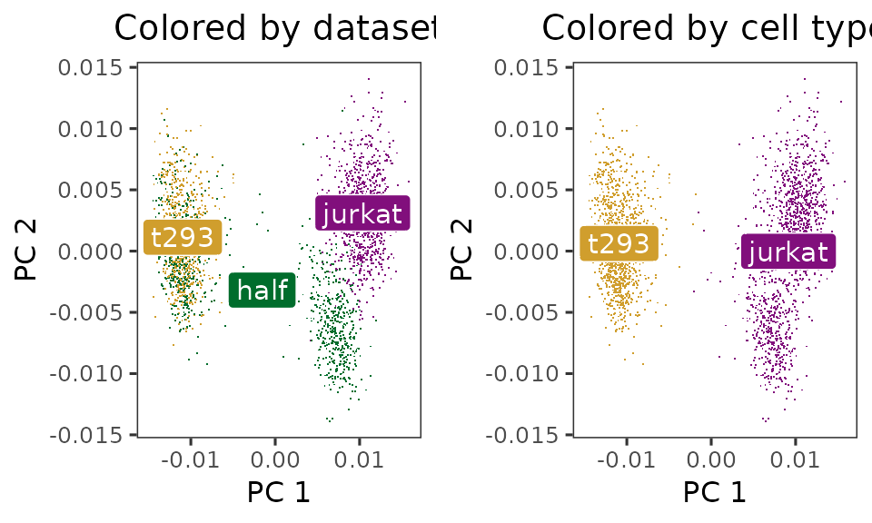
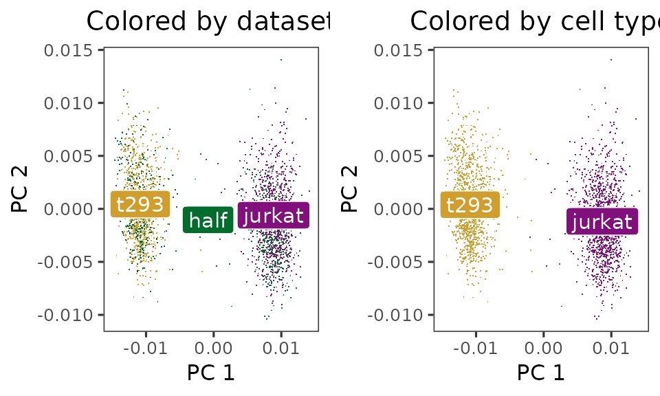

Quick start to Harmony
Korsunsky et al.: Fast, sensitive, and accurate integration of single cell data with Harmony
Source:vignettes/quickstart.Rmd
quickstart.RmdIntroduction
Harmony is an algorithm for performing integration of single cell genomics datasets. Please check out our latest manuscript on Nature Methods.

Installation
Install Harmony from CRAN with standard commands.
install.packages('harmony')Once Harmony is installed, load it up!
## Loading required package: RcppIntegrating cell line datasets from 10X
The example below follows Figure 2 in the manuscript.
We downloaded 3 cell line datasets from the 10X website. The first two (jurkat and 293t) come from pure cell lines while the half dataset is a 50:50 mixture of Jurkat and HEK293T cells. We inferred cell type with the canonical marker XIST, since the two cell lines come from 1 male and 1 female donor.
- support.10xgenomics.com/single-cell-gene-expression/datasets/1.1.0/jurkat
- support.10xgenomics.com/single-cell-gene-expression/datasets/1.1.0/293t
- support.10xgenomics.com/single-cell-gene-expression/datasets/1.1.0/jurkat:293t_50:50
We library normalized the cells, log transformed the counts, and scaled the genes. Then we performed PCA and kept the top 20 PCs. The PCA embeddings and meta data are available as part of this package.
data(cell_lines)
V <- cell_lines$scaled_pcs
meta_data <- cell_lines$meta_dataInitially, the cells cluster by both dataset (left) and cell type (right).
library(ggplot2)
do_scatter <- function(xy, meta_data, label_name, base_size = 12) {
palette_use <- c(`jurkat` = '#810F7C', `t293` = '#D09E2D',`half` = '#006D2C')
xy <- xy[, 1:2]
colnames(xy) <- c('X1', 'X2')
plt_df <- xy %>% data.frame() %>% cbind(meta_data)
plt <- ggplot(plt_df, aes(X1, X2, col = !!rlang::sym(label_name), fill = !!rlang::sym(label_name))) +
theme_test(base_size = base_size) +
guides(color = guide_legend(override.aes = list(stroke = 1, alpha = 1,
shape = 16, size = 4))) +
scale_color_manual(values = palette_use) +
scale_fill_manual(values = palette_use) +
theme(plot.title = element_text(hjust = .5)) +
labs(x = "PC 1", y = "PC 2") +
theme(legend.position = "none") +
geom_point(shape = '.')
## Add labels
data_labels <- plt_df %>%
dplyr::group_by(!!rlang::sym(label_name)) %>%
dplyr::summarise(X1 = mean(X1), X2 = mean(X2)) %>%
dplyr::ungroup()
plt + geom_label(data = data_labels, aes(label = !!rlang::sym(label_name)),
color = "white", size = 4)
}
p1 <- do_scatter(V, meta_data, 'dataset') +
labs(title = 'Colored by dataset')
p2 <- do_scatter(V, meta_data, 'cell_type') +
labs(title = 'Colored by cell type')
cowplot::plot_grid(p1, p2)
Let’s run Harmony to remove the influence of dataset-of-origin from the cell embeddings.
harmony_embeddings <- harmony::RunHarmony(
V, meta_data, 'dataset', verbose=FALSE
)After Harmony, the datasets are now mixed (left) and the cell types are still separate (right).
p1 <- do_scatter(harmony_embeddings, meta_data, 'dataset') +
labs(title = 'Colored by dataset')
p2 <- do_scatter(harmony_embeddings, meta_data, 'cell_type') +
labs(title = 'Colored by cell type')
cowplot::plot_grid(p1, p2, nrow = 1)
Next Steps
Interfacing to software packages
You can also run Harmony as part of an established pipeline in several packages, such as Seurat. For these vignettes, please visit our github page.
Detailed breakdown of the Harmony algorithm
For more details on how each part of Harmony works, consult our more detailed vignette “Detailed Walkthrough of Harmony Algorithm”.
Session Info
## R version 4.5.1 (2025-06-13)
## Platform: x86_64-conda-linux-gnu
## Running under: Arch Linux
##
## Matrix products: default
## BLAS/LAPACK: /home/main/miniconda3/envs/Rmain/lib/libopenblasp-r0.3.30.so; LAPACK version 3.12.0
##
## locale:
## [1] LC_CTYPE=en_US.UTF-8 LC_NUMERIC=C
## [3] LC_TIME=en_US.UTF-8 LC_COLLATE=en_US.UTF-8
## [5] LC_MONETARY=en_US.UTF-8 LC_MESSAGES=en_US.UTF-8
## [7] LC_PAPER=en_US.UTF-8 LC_NAME=C
## [9] LC_ADDRESS=C LC_TELEPHONE=C
## [11] LC_MEASUREMENT=en_US.UTF-8 LC_IDENTIFICATION=C
##
## time zone: America/New_York
## tzcode source: system (glibc)
##
## attached base packages:
## [1] stats graphics grDevices utils datasets methods base
##
## other attached packages:
## [1] ggplot2_4.0.0 harmony_2.0.0 Rcpp_1.1.0
##
## loaded via a namespace (and not attached):
## [1] Matrix_1.7-4 gtable_0.3.6 jsonlite_2.0.0
## [4] dplyr_1.1.4 compiler_4.5.1 tidyselect_1.2.1
## [7] jquerylib_0.1.4 systemfonts_1.3.1 scales_1.4.0
## [10] textshaping_1.0.3 RhpcBLASctl_0.23-42 yaml_2.3.10
## [13] fastmap_1.2.0 lattice_0.22-7 R6_2.6.1
## [16] labeling_0.4.3 generics_0.1.4 knitr_1.50
## [19] htmlwidgets_1.6.4 tibble_3.3.0 desc_1.4.3
## [22] bslib_0.9.0 pillar_1.11.1 RColorBrewer_1.1-3
## [25] rlang_1.1.6 cachem_1.1.0 xfun_0.53
## [28] fs_1.6.6 sass_0.4.10 S7_0.2.0
## [31] cli_3.6.5 withr_3.0.2 pkgdown_2.2.0
## [34] magrittr_2.0.4 digest_0.6.37 grid_4.5.1
## [37] cowplot_1.2.0 lifecycle_1.0.4 vctrs_0.6.5
## [40] evaluate_1.0.5 glue_1.8.0 farver_2.1.2
## [43] codetools_0.2-20 ragg_1.5.0 rmarkdown_2.30
## [46] tools_4.5.1 pkgconfig_2.0.3 htmltools_0.5.8.1